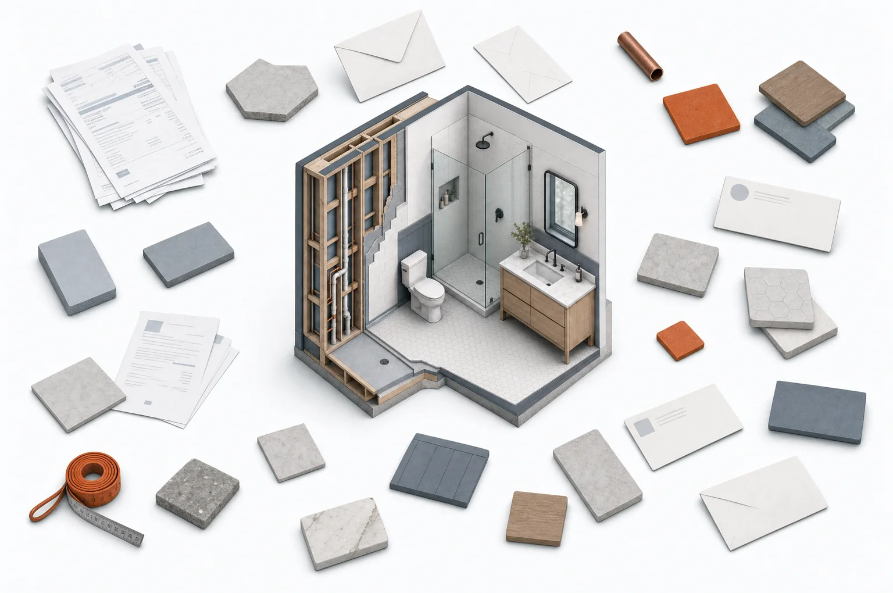
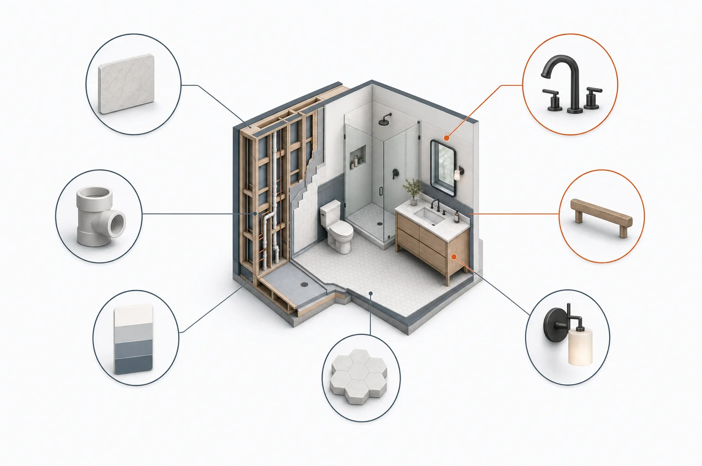
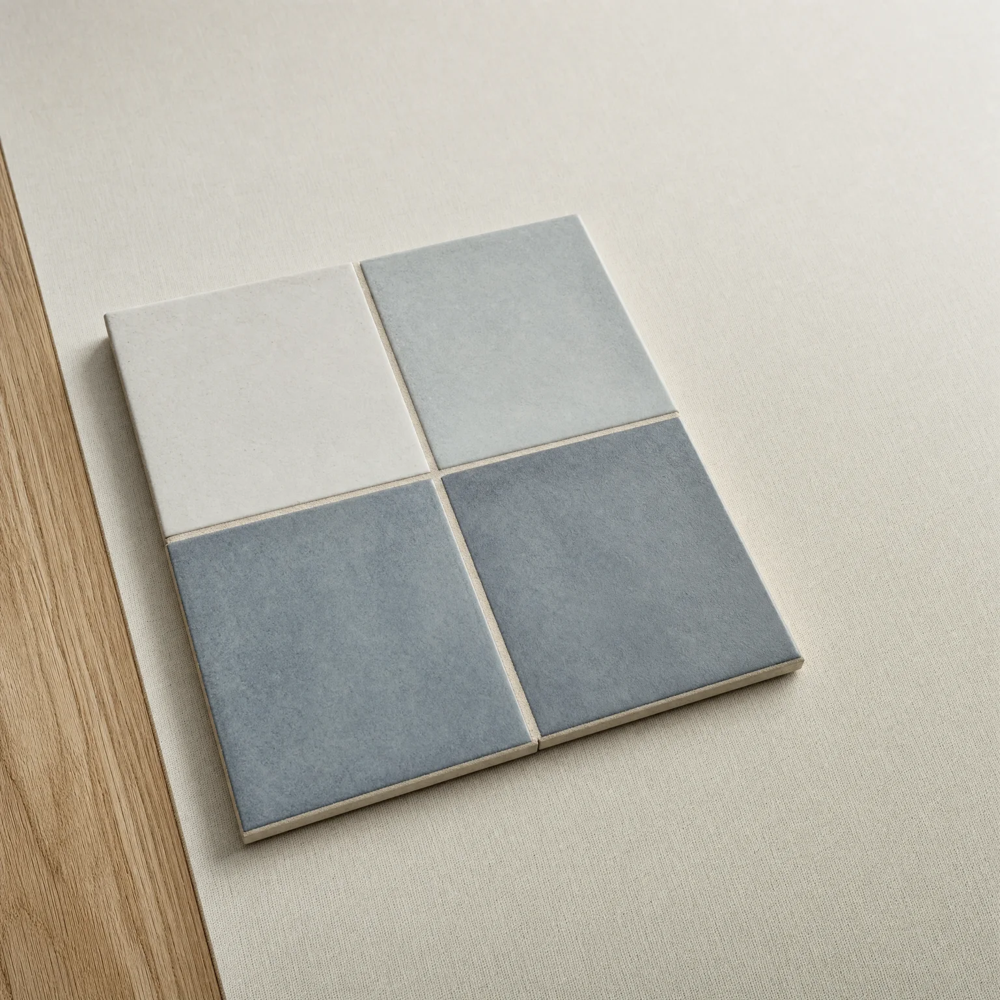
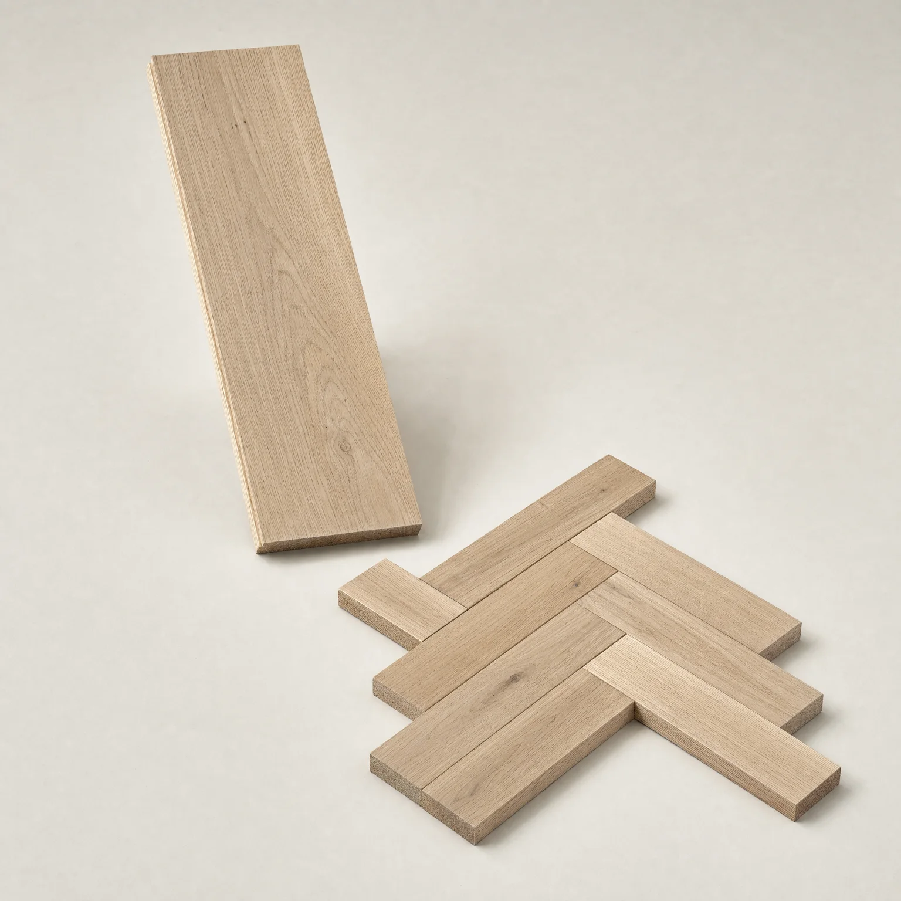
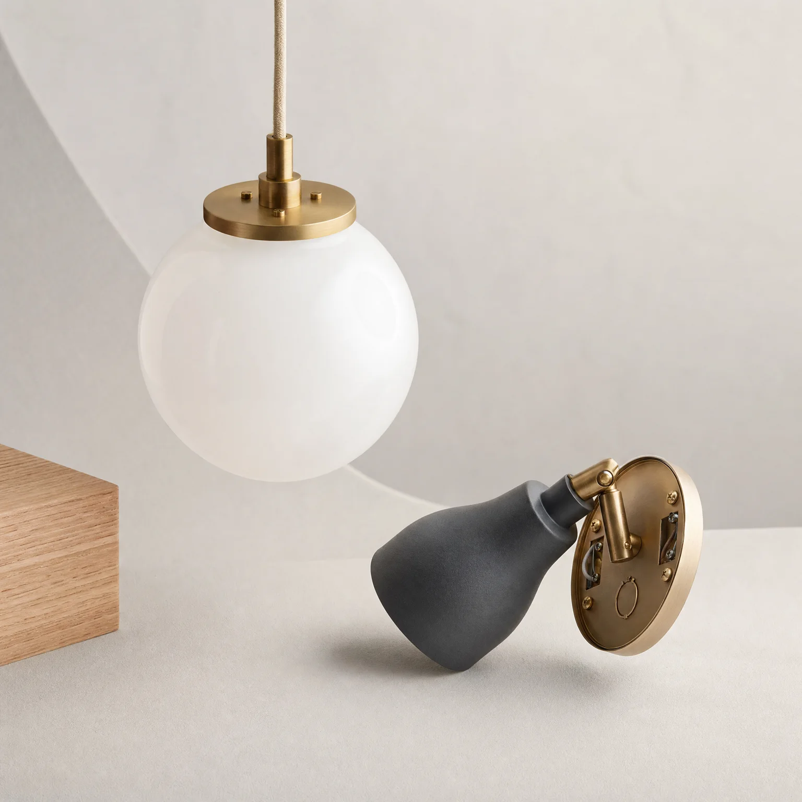

What does a renovation look like when your agent helps with the buying?
Takeoff explores renovation purchasing from a property owner’s point of view. Drawing on my architecture background, I designed a family of embedded interactions connecting a room, a product, a decision, and the people responsible for it.
Product Strategy
Look beyond a single checkout to the dependencies between materials, trades, budgets, and dates.
Prototyping & Testing
Explore fourteen silent interaction studies. These are concept simulations; participant testing remains a next step.
Iterating with Evidence
Use desk research to question the proposal, surface missing information, and define what needs to be tested.
Problem
A renovation is a connected project. A shopping cart is a list.
A vanity changes the mirror width. A tile layout changes the quantity. A delayed fixture changes the installer’s visit. Buying each item separately leaves the owner to keep those relationships together.

The problem is not finding another product. It is keeping the purchase connected to the project.
The research archive points toward scattered decisions, uncertain deliveries, and unclear responsibility when owners supply materials themselves. An assistant can suggest a product; that does not make the suggestion ready to order.
Who confirmed the right product, quantity, and date?
Design hypothesis: the useful interface lives at the moment a recommendation becomes a commitment—not only at discovery or payment.
Opportunity
Project context as the foundation of the purchase.
Instead of asking an owner to manage another store app, Takeoff explores structured interfaces inside an assistant conversation. The aim is not less interface. It is the right interface at a consequential moment.
A quantity to inspect
Show dimensions, layout assumptions, waste, and pack rounding before anyone pays.
An approval with a scope
Separate who chose the finish, who checked compatibility, and who authorised the spend.
A date with consequences
Compare an arrival window with the task that needs it—and expose uncertainty.
Solution
Takeoff: the purchase interactions a renovation needs…
A concept for property owners buying materials, fixtures, and furniture from multiple suppliers. Embedded cards help people check, compare, approve, and hand off decisions without losing the surrounding conversation.
…powered by a Spec that keeps the evidence together.
A Spec connects a selected product to its room, assumptions, sources, approvals, and order state. The owner, trade, and supplier have different responsibilities around the same decision—not three disconnected versions of it.

One decision record, several roles. A conceptual system—not a working cross-platform integration.
Core Flows
From a room to a decision people can act on.
Four core moments carry the story: establish context, inspect the quantity, expose schedule risk, and confirm who can approve.
Onboarding to Takeoff
Start with the room and one useful question, not a complete project-management setup. In this study, the next question opens a delivery-access card.
Research
The problems Takeoff needs to solve.
The research points to problems with material choices, orders, approvals, and delivery. These findings support the concept. They do not prove that people will adopt it.
Three Personas
A renovation purchase connects the homeowner, the contractor, and the supplier. Each person needs different information before they can act.
The Homeowner
Role: Chooses materials and approves the cost.
Goal: Finish the renovation without unexpected costs or delays.
Pain: Choices get lost in messages and photos. Late decisions can delay the work.
Takeoff’s role: Keep each choice, its reason, and its approval together.
The Contractor
Role: Checks the material requirements and coordinates the work.
Goal: Get the correct materials to the site when the crew needs them.
Pain: Wrong quantities, duplicate orders, and missed deliveries disrupt the job.
Takeoff’s role: Show quantities, confirmed choices, and order status in a shared record.
The Supplier
Role: Confirms stock, fills orders, and arranges delivery.
Goal: Fill the order correctly and avoid preventable returns.
Pain: Incomplete requests cause extra calls, wrong selections, and delivery problems.
Takeoff’s role: Send the exact product, quantity, approvals, and site requirements with the request.
Key Validation Points
Homeowners need to decide before work starts.
Late material choices can delay a renovation. Takeoff should show which decisions are due and what work depends on them.
Contractors need quantities and orders they can check.
Quantity errors and duplicate orders are different problems. Clear calculations address the first. A shared order history helps people spot the second.
Delivery dates need project context.
A delivery can be too early or too late. Compare its arrival window with the site schedule and the person who will receive it.
Approvals need a written record.
Show who approved the material, who checked its fit, and who approved the cost. Keep the scope of each approval clear.
Samples and specifications need to stay together.
Homeowners need to judge a material in the room. Suppliers need its exact details. Keep the sample, chosen finish, and specification with the order.
Gaps & Strategic Risks
Homeowner trust is still untested.
StatusNeeds homeowner testing
Risk Owners may want help with choices but not trust an agent to place an order.
Mitigation Start with review and approval. Let owners control when to buy.
Suppliers may prefer phone calls and portals.
StatusSupplier channel fit untested
Risk A new chat channel may add work instead of reducing it.
Mitigation Connect to existing supplier systems. Keep a path to a person when a request needs help.
A clear card cannot fix an uncertain delivery.
StatusLive delivery data required
Risk A polished interface can make an estimate look like a promise.
Mitigation Separate estimated dates from confirmed dates. Show changes and who must respond.
A quantity tool cannot prevent duplicate orders alone.
StatusShared order history required
Risk Someone may already have placed the order through another channel.
Mitigation Check existing orders before release. Test whether suppliers can share the required status.
Adoption Readiness
The need for better coordination is clear enough to explore. Willingness to use Takeoff still needs direct testing.
Homeowners
Useful starting point: Clear choices, costs, dates, and approvals.
What to test: Would they approve a purchase inside a chat? When would they prefer to ask their contractor?
Contractors
Useful starting point: A shared record that reduces repeated checks.
What to test: Does it replace work in a spreadsheet, or create another record to maintain?
Suppliers
Useful starting point: Complete requests with fewer missing details.
What to test: Can staff use the request in their current systems? Does it reduce calls, corrections, or returns?
Pilot Product Categories
Start with a focused material category, not the whole renovation. These categories let us test different decisions within the same purchase process.

Tiles
Check the layout, waste allowance, box coverage, and batch match.
What to test Can the owner and installer agree on the quantity and finish before the order?

Flooring
Connect room area, laying direction, pack size, and installation requirements.
What to test Does a layout change update the order without losing the installer’s checks?
Interior Paint
Keep the approved color, sheen, surface preparation, and coverage together.
What to test Can a sample approval carry through to the correct paint and quantity?

Light Fixtures
Check dimensions, mounting, light output, dimmer compatibility, and arrival dates.
What to test Can the electrician confirm a substitute before the owner approves its cost?
Generated category images, not supplier listings. Choose a category and supplier for the first pilot, then apply what we learn to the others.
Strategic Recommendations
Lead with practical savings, not the agent.
Focus on fewer repeated checks, clearer approvals, and fewer ordering mistakes. Test these benefits rather than promise them.
Support the supplier’s existing workflow.
Connect the homeowner’s decisions to the supplier’s order process. Do not ask either person to maintain a separate storefront.
Start with a narrow material category.
Prioritize tiles, flooring, interior paint, and light fixtures as pilot options. Start with a category and supplier before expanding.
Add confirmed delivery status.
A schedule check is not live tracking. Connect supplier updates before claiming that Takeoff can track an order.
Test homeowner trust directly.
Ask owners to review a substitute with their contractor. Observe what they need to see before they approve the purchase.
Exploring Form Factors
Exploring where the decision should live.
The project began with artwork, moved toward the merchant’s view of an agent, then narrowed to renovation purchases. Renovation connects the work to architecture: dimensions, sequences, material choices, and responsibility.
Strategic Directions
A standalone app
A complete project workspace, but another place to enter and maintain information.
A supplier portal
Access to one merchant’s products, but limited context across different suppliers.
Embedded interactions
A smaller interface at the point of decision, backed by a durable record beyond the message.
Conversationintent & contextEmbedded cardinspect & decideProject recordevidence & status
Why Takeoff?
Builds on context
Refer to a room, a past choice, or an installer’s note without starting again.
Uses architectural thinking
Understand a product through fit, sequence, and installation—not just appearance.
A bounded prototype
One bathroom makes fourteen interactions comparable without pretending to solve every renovation.
Prototyping and Testing
Fourteen studies. One connected renovation.
Each short study isolates a decision. Together they explore how a conversation can become a useful project record. Clips play in a loop. Hover to pause or restart. On a touch screen, tap the video to show these controls.
Context that survives the conversation
From visual preference to explicit information
Checks before commitment
Continuity beyond approval
Testing and iterating with feedback
These studies are ready for critique, not reported as tested with users. A realistic task: ask an owner and installer to resolve a late fixture, identify an unknown specification, and decide whether the order may proceed. Then ask a supplier to use the resulting handoff.
Key User Insights to Test
Recall, not replay
Can the owner recover the current decision and its reason without rereading the entire thread?
Help at the right moment
Does the prompt prevent a consequential mistake, or interrupt a choice the person can make unaided?
A usable handoff
Can the trade and supplier use the record without joining the owner’s assistant app?
Design Decisions
The card is temporary. The decision needs to last.
The proposed system separates conversational suggestions from confirmed project information. A new message should not silently replace an approved specification.
Proposed state model. A material, quantity, price, or date change can require renewed approval.
Where we landed
Insight 1: Keep the reason attached to the choice.
Specs as conversation context
Recover a relevant choice without replaying every exchange.
Specs as a shared record
Carry the source and scope of the decision to the next person.
Insight 2: Surface the next consequential uncertainty.
A risk, not another reminder
Explain which installation depends on the material arriving.
An unknown, not a guess
Route missing information to someone who can answer it.
Designing for Real-World Constraints
A complete catalog and a confirmed delivery date cannot be assumed.
The interface depends on information it does not control. Stock listings can be stale. Lead times can be ranges. Room photos can hide obstructions. None should be presented as a guarantee.
Supplier estimate3–5 weeksSite requirementBy 12 OctoberHonest statusAt risk until confirmed
How do we help people decide without claiming certainty we do not have?
Constraining the experience
Context-based assistance
Suggest a field or surface a dependency from information already shared. Keep its source, timestamp, and confirmation state visible.
Considerations
Why this suggestion?
Link it to a missing constraint or changed date, rather than an unexplained recommendation.
Can this be inferred?
A transcript can suggest a field. It cannot certify compatibility or installation compliance.
Who can verify it?
Send technical questions to the responsible trade and fulfilment questions to the supplier.
Explicit confirmation
An owner approving the colour does not approve the installation. An installer confirming fit does not authorise payment.
Considerations
When should we stop?
Block release when required technical information, spending approval, or supplier confirmation is missing.
What if someone is offline?
Provide a shareable record and accept a documented reply. Do not require every participant to use one assistant.
What changes after approval?
Record a new version, show the difference, and request approval again where the change matters.
Trading autonomy for accountable decisions.
Takeoff should make preparation easier, not make responsibility disappear. The agent can organise evidence and suggest next steps. The owner, trade, and supplier remain responsible for decisions only they can confirm.
Less automatic purchasingMore explicit authority
This is a trade-off worth making for trust.
Reflection
What I learned
Architecture connects decisions.
A tile or tap is part of a larger project. The room, material, schedule, and people affect each other.
Interfaces are changing.
A chat holds context. People still need clear controls to compare, measure, approve, and order.
A concept still needs testing.
Research shaped the questions. We still need to test Takeoff with users and suppliers.
Independent concept by David. Generated images and simulated interactions. No live orders, messages, measurements, or platform connections. Built for review.